hal neve | latin neve | egy kép róla |
Csuka | Esox lucius L. | 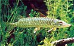 |
Bodorka | Rutilus rutilus L. | 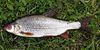 |
Amur | Ctenopharyngodon idella Cuv. et Val. | 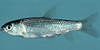 |
Vörösszárnyú keszeg | Scardinius erythrophthalmus L. |  |
Jászkeszeg | Leucicus idus L. |  |
Balin | Aspius aspius L. | 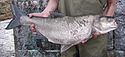 |
Szélhajtó küsz | Alburnus alburnus L. |  |
Karikakeszeg | Blicca bjoerkna L. | 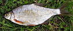 |
Dévérkeszeg | Abramis brama L | 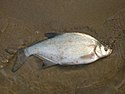 |
Lapos keszeg | Abramis ballerus L. |  |
Garda | Pelecus cultratus L. | 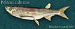 |
Compó | Tinca tinca L. | 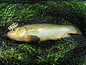 |
Halványfoltú küllő | Gobio albipinnatus vladykovi | 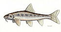 |
Kínai razbóra | Pseudorasbora parva Schlegel |  |
Szivárványos ökle | Rhodeus sericeus amarus Bloch |  |
Kárász | Carassius carassius L. | 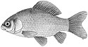 |
Ezüstkárász | Carassius auratus gibelio Bloch |  |
Ponty | Cyprinus carpio L. | 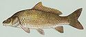 |
Fehér busa | Hypophthalmichthys molitrix Cuv. et Val. |  |
Pettyes busa | Aristichthys nobilis Richardson |  |
Réti csík | Misgurnus fossilis L. |  |
Európai harcsa | Silurus glanis L. |  |
Törpeharcsa | Ictalurus melas Rafinesque |  |
Európai angolna | Anguilla anguilla L. | |
Naphal | Lepomis gibbosus L. | 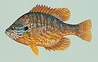 |
Sügér | Perca fluviatilis L. | 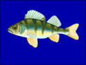 |
Vágó durbincs | Gymnocephalus cernuus L |  |
Fogassüllő | Stizostedion lucioperca L. | 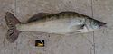 |
Kősüllő | Stizostedion volgense Gmelin | 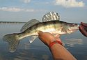 |
Folyami géb | Neogobius fluviatilis Pall. |  |
Felyes domolykó | Leuciscus cephalus L |  |